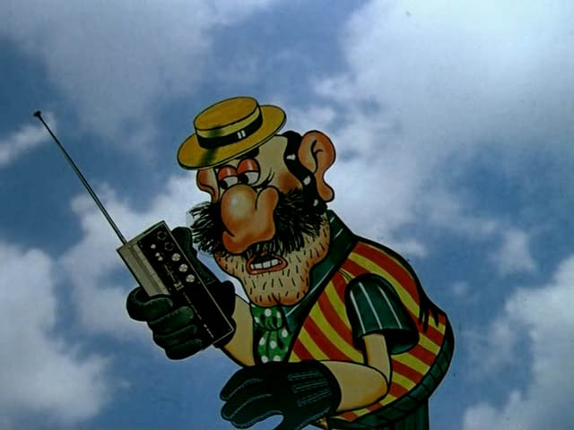

WebRTC
Real-time communication between browsers
Alexander Khaylo aka naxel
WebRTC, WTF?
WebRTC нужен для:
- Получение доступа к камере и микрофону
- Аудио и видео звонки
- Передача текстовой информации
Call me!
Tвой кактус у нас...
MediaStream and getUserMedia
Поддержка:
- Chrome 18.0.1008+
- Opera, Opera Mobile 12
- Firefox 17+ (включается в about:config)
GetUserMedia
Для получения медиа потока необходимо:
- Проверить поддержку браузером
- Указать потоки которые хотите получить (видео и/или аудио)
- Указать два калбека
getUserMedia({
video: true,
audio: true
}, onSuccess, onError);
function onSuccess() {
alert('Successful!');
}
function onError() {
alert('Error! Did you allow access?');
}Стандарты?
Стандарты? Аха!
navigator.getUserMedia ||
(navigator.getUserMedia = navigator.mozGetUserMedia ||
navigator.webkitGetUserMedia || navigator.msGetUserMedia);
if (navigator.getUserMedia) {
//code...
} else {
alert('getUserMedia is not supported in this browser.');
}
Hacks
Дополнительные параметры
Можно указать размеры сторон и их соотношение для видео потока
navigator.getUserMedia({
video: {
mandatory: {
maxWidth: 360
}
}
}
Пока поддерживает только Chrome
Video streams
Чтобы отобразить видео поток нужно:
- Создать элемент video на странице
- Получить эго из DOM
- Установить ему autoplay
- Установить ему в SRC видео поток
<video id="webCam"></video>
var video = document.getElementById('webCam');
video.autoplay = true;
video.src = URL.createObjectURL(stream);
Capturing images
Для отображения кадра на канве:
- Получить элемент канвы из DOM
- Получить его контекст
- Сделать канву таких же размеров как и видео
- Нарисовать!
<canvas id="photo"></canvas>
<input type="button" id="takePhoto" value="Cheese!" />
function takePhoto() {
var photo = document.getElementById('photo'),
context = photo.getContext('2d');
photo.width = video.clientWidth;
photo.height = video.clientHeight;
context.drawImage(video, 0, 0, photo.width, photo.height);
}
Canvas stream
<canvas id="hCanvas" style="display: none;"></canvas>
var hCanvas = document.getElementById('hCanvas'),
var hCtx = hCanvas.getContext('2d'),
function streamFeed() {
requestAnimationFrame(streamFeed);
hCtx.drawImage(video, 0, 0, canvas.width, canvas.height);
var imageData = hCtx.getImageData(0, 0, canvas.width, canvas.height);
context.putImageData(imageData, 0, 0);
}
Video streams + effects
function streamFeed() {
//…
imageData.data = addEffect(imageData.data);
context.putImageData(imageData, 0, 0);
}
function addEffect (data) {
for (var i = 0, l = data.length; i < l; i += 4) {
data[i] = 255 - data[i]; // red
data[i + 1] = 255 - data[i + 1]; // green
data[i + 2] = 255 - data[i + 2]; // blue
}
return data;
}
RTCPeerConnection
Architecture

Сигнализационные сообщения:
- Сессионные сообщения
- Конфигурация сети
- Медиа-возможности
Offer and Answer
Создаем соединение:
var pc1 = new RTCPeerConnection(null);
pc1.onconnecting = onSessionConnecting;
pc1.onaddstream = onRemoteStreamAdded;
Запрашиваем подключение:
var mediaConstraints = {
'mandatory': {
'OfferToReceiveAudio': true,
'OfferToReceiveVideo': true
}
};
pc1.createOffer(function (sessionDescription) {
pc1.setLocalDescription(sessionDescription);
sendMessage(sessionDescription);
}, null, mediaConstraints);
Разрешаем установить связь и отсылаем ответ:
if (sessionDescription.type === 'offer') {
pc2.createAnswer(function (sessionDescription) {
pc2.setLocalDescription(sessionDescription);
sendMessage(sessionDescription);
}, null, mediaConstraints);
}
Получаем ответ от клиента, к которому хотим подключиться:
if (sessionDescription.type === 'answer') {
pc1.setRemoteDescription(
new RTCSessionDescription(sessionDescription)
);
alert('Connection is established');
}
Add Stream
Добавляем поток в RTCPeerConnection:
function onSuccess(stream) {
videoLocal.autoplay = true;
attachMediaStream(videoLocal, stream);
pc1.addStream(stream);
}
Получаем входящий поток и добавляем его к видео:
pc2.onaddstream = function (event) {
videoRemote.autoplay = true;
attachMediaStream(videoRemote, event.stream);
}
Ice Servers (stun & turn)

Добавляем stun-сервер:
var configuration = { "iceServers": [
{ "url": "stun:23.21.150.121" }
] };
var pc1 = new RTCPeerConnection(configuration);
pc.onicecandidate = function (event) {
if (event.candidate) {
sendMessage({type: 'candidate',
label: event.candidate.sdpMLineIndex,
id: event.candidate.sdpMid,
candidate: event.candidate.candidate});
}
}
Добавляем кандидаты:
if (sessionDescription.type === 'candidate') {
var candidate = new RTCIceCandidate({sdpMLineIndex: sessionDescription.label,
candidate: sessionDescription.candidate});
pc1.addIceCandidate(candidate);
}

RTCPeerConnection работает в:
- Chrome
- Firefox (с включенными getUserMedia в about:config)
Data Channels
var pcConstraints = {optional: [
{RtpDataChannels: true}
]};
pc = new RTCPeerConnection(servers, pcConstraints);
pc.ondatachannel = receiveChannelCallback; //next*2 page ->
channel = pc.createDataChannel('RTCDataChannel', {reliable: false});
channel.onmessage = function (event) {
console.log("Message in chanel #1: " + event.data);
};
channel.onopen = function () {
console.log('Chanel #1. state is: ' + channel.readyState);
};
function receiveChannelCallback(event) {
channel = event.channel;
channel.onmessage = function (event) {
console.log('Message in chanel #2: ' + event.data);
};
channel.onopen = function () {
channel.send('Hi!');
};
}
RtpDataChannels работает в:
- Chrome (при запуске с флагом --enable-data-channels)
- Firefox (с включенными getUserMedia в about:config)

Дополнение №1
var express = require('express')
, sio = require('socket.io');
var app = express.createServer();
app.get('/', function(req, res) {
res.sendfile(__dirname + '/demos.html');
});
app.listen(3001);
var io = sio.listen(app);
io.sockets.on('connection', function(socket) {
socket.on('signals', function(data) {
socket.broadcast.emit('signals', data);
});
});Почитать
Посмотреть
Вопросы?
Спасибо!